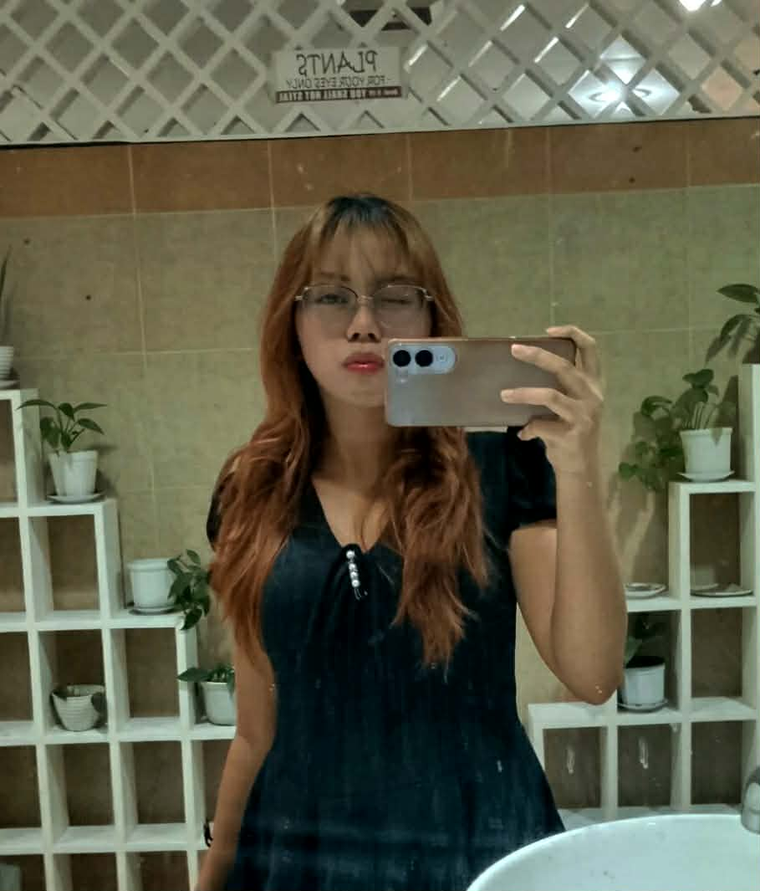

Melissa Marcaida
Student | Aspiring Software Engineer | Optimistic
Student | Aspiring Software Engineer | Optimistic

Hello! I'm Mel student at PUP and a proud member of Google Developer Groups on Campus PUP. I'm mesmerized, curious, and driven to explore everything related to technology.
Driven by the Iskolar ng Bayan spirit, I aim to use technology to solve community problems.